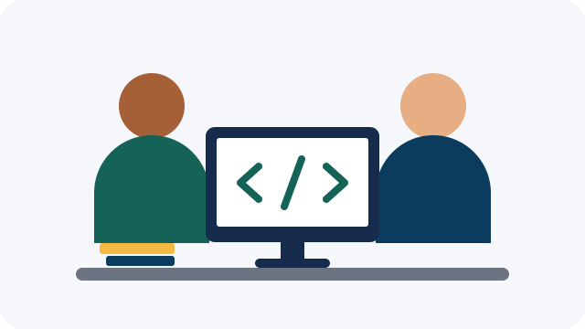

Aprender tecnologia, ampliar possibilidades
A OHTMLT propõe um espaço de aprendizado digital para quem deseja dar os primeiros passos com computadores e com a criação de páginas para a web.

Quem somos
A Organização HTML para Todos é uma ONG fictícia criada para este projeto acadêmico. Sua missão proposta é tornar o aprendizado digital mais acessível, com linguagem clara e atividades práticas.
O público da proposta inclui pessoas que estão começando a usar a tecnologia e voluntários interessados em compartilhar conhecimentos.
Como participar
Conheça as propostas de oficinas e experimente o formulário de interesse com dados fictícios. Este site não oferece inscrições em atividades reais.